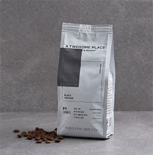
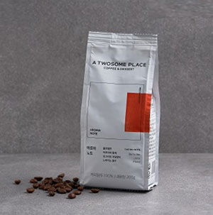

프리미어 디저트 카페 투썸 플레이스 브랜드 이야기
투썸의 큐그레이더(Q-Grader)는 좋은 산지의 신선한 원두만을 선별해 개성있는 풍미의 두 가지 블렌드를 제공합니다. 원두 타입 별 최적의 밸런스를 맞춘 로스팅 포인트, 최상의 에스프레소 추출 기술이 더해져 오늘도 가장 맛있는 커피가 완성됩니다.
오늘의 기분, 나의 취향에 따라 선택할 수 있는 블랙그라운드, 아로마노트 두가지 타입의 원두를 만나보세요.
 투썸플레이스가 추천하는 특별한 커피를 경험해 보세요.
평화로운 유럽초원의 감성을 담은 부드럽고 달콤한 스페니쉬 연휴라테
스페니쉬 라테는 야외에서 활동이 많은 스페인 목동들이 피곤함을 해소하기 위해 즐겨 마시던 커피입니다.
취향 별로 원두를 골라 색다른 풍미를 즐겨 보세요.
진한 원두의 깊은 풍미와 초콜릿과 같은 단맛이 느껴지는 라테
부드럽고 깔끔한 단맛이 느껴지는 라테
롱블랙은 호주와 뉴질랜드를 시작으로 최근 영국 등 유럽 전역에서 즐기는 커피로,
적은 양의 물에 에스프레소 투 샷을 넣어 진하고 깊은 풍미가 매력적인 커피입니다.
에스프레소보다 짧은 추출시간, 20ml의 적은 양이 추출되는 리스트레또 투 샷을 넣어,
아메리카노 보다 진한고 부드러운 풍미를 느낄 수 있는 투썸의 시그니처 커피.